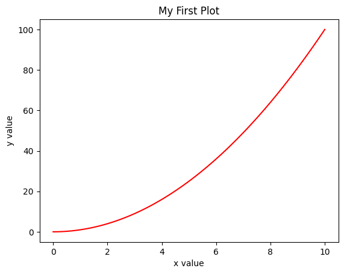
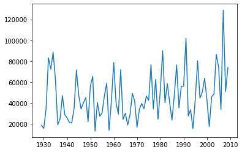
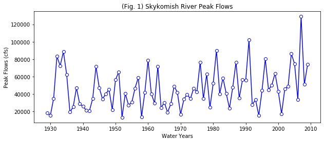
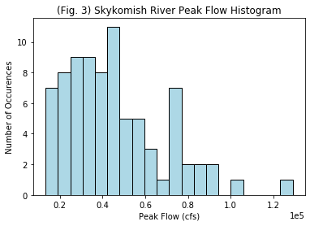

Lab 1-1#
Section 1: Running Code in Jupyter Notebook#
This lab is an example of a Jupyter Notebook. The “notebook” file is a combinaiton of code, text, figures, and more. We are running these files within a JupyterHub (a cloud-based computing platform). Read more about these here.
You’ll notice that each piece of code lives in what we call a “cell”. Cells structure the notebook and allow you to run each cell individually. To run the code in a cell, press Shift+Enter or click the Run button (looks like a “play” button, rightward pointing triangle) button above. To run multiple cells at once, choose one of the options under the Run menu above. After running the code in a cell, its output will appear below it.
To practice, try changing and running the code in the cell below.
# this is a comment in python
# these lines are ignored
# the code below is simple addition
3 + 9
12
To create new cells, click the + button in the upper left of the notebook, or using the keyboard shortcuts “A” (insert cell Above current cell), “B” (insert cell Below current cell).
Try inserting a cell below and practice running a line of code that will output the number 6.
Stop running code by pressing the Stop (square) button next to Run. This useful if the code is taking a long time to run, but you suspect it encountered a problem and need to stop it.
Use the Help menu if you need help with your notebook. Remember to save your notebooks by clicking the save button in the upper left hand corner of the notebook, or going to “File > Save Notebook”. Also, when you create a new notebook, remember to give it a unique name. You can right-click on the files in the file tree on the left to rename them.
To create a markdown cell like this (with text and formatting), use the dropdown menu on the top to switch a cell type between “Code” and “Markdown”
For formatting markdown cells, check out the documentation here.
Python Basics#
This section will introduce Python coding. For more information and tutorials, see this section on the class website.
Take a look at numpy-tutorial.ipynb for an introduction to NumPy and N-dimensional arrays
Modules and Imports#
First, we will import the modules for the code to use. These modules include built-in functions (they’re also sometimes called “packages” or “libraries”).
We will call these functions later by writing module.function(arguments). This is telling the computer to use the function from the module with the given arguments, or inputs.
In the example below, we import numpy and give it an “alias” or shorthand name by saying as np, this is like giving a nickname to the library.
# First, import the library that has the functions needed.
import numpy as np
# Next, call a function from the library with given argument(s).
# For this example, I used the square root function from the numpy library
np.sqrt(49)
np.float64(7.0)
For information on each module and function, including what they return or their arguments, look at the documentation at https://docs.python.org/3/. Use the search bar to find information about any module or function.
Also, notice the comments in the code above. The comments begin with a # symbol which means that the line will not be recognized and run as code by the computer. Rather, they serve as communication about the piece of code to another person reading it. When commenting code, too much is better than not enough. Comments will help you debug code and troubleshoot issues more quickly and effectively.
Variables and Data Types#
Next, we will define some variables. Variables store values and can be changed by code. They can be integers, floats (numbers that can have a decimal), or strings (character string, written in quotation marks). When naming variables, use clarity over cleverness. Name them logically so that you or another person can recognize their function in your code.
# int variable
y = -38
# float variables
z = 9.
k = -2.89
# string variables
year = "2026"
lab_title = "Lab 1.1"
To display these variables, use the print() function.
print(y)
print(7+y)
print(z)
print(k)
print("Hello world")
-38
-31
9.0
-2.89
Hello world
To see the data type of each variable, use the type() function. Here we use print() to print out the result of the type() function.
print(type(y))
print(type(7+y))
print(type(z))
print(type(k))
print(type("Hello world"))
<class 'int'>
<class 'int'>
<class 'float'>
<class 'float'>
<class 'str'>
Python has a built-in data structure called a “list”.
# Define lists
list_of_words = ["river", "lake", "ocean"]
list_of_numbers = [2, 8, 9]
print(list_of_words)
print(list_of_numbers)
['river', 'lake', 'ocean']
[2, 8, 9]
# To access a certain part of a list, use name_of_list[index].
# The index starts at 0, so the first component of a list has index 0.
print(list_of_words[0])
print(list_of_numbers[0])
river
2
# Change one or more parts of a list using the index.
list_of_words[2] = 'glacier'
list_of_numbers[1] = 10
print(list_of_words)
print(list_of_numbers)
['river', 'lake', 'glacier']
[2, 10, 9]
For Loops and If Statements#
For loops use an index to iterate through a section of code multiple times.
# You can use for loops to go through a list.
# This for loop prints out every string in the array list_of_names
for word in list_of_words:
print(word)
river
lake
glacier
# Use the range function for the loop index.
# This for loop prints every number from 3 to 7.
for i in range(3,7):
print(i)
3
4
5
6
# Use enumerate to go through a list to get the value and its index
# the len() function.
for i, word in enumerate(list_of_words):
print('At index {index_placeholder}, we have the word {word_placeholder}'.format(index_placeholder=i,word_placeholder=word))
At index 0, we have the word river
At index 1, we have the word lake
At index 2, we have the word glacier
If statements will only go through the code if the logical expression is true.
# This for loop combined with the if/else statements will print every number in this list if its square root is greater than or equal to 6.
square_nums = [3**2, 4**2, 5**2, 6**2, 7**2, 8**2] # python notation for raising x to the power of y is x**y
for n in square_nums:
if np.sqrt(n) <= 6:
print("The square root of {} is less than 6".format(n))
else:
print("The quare root of {} is greater than 6".format(n))
The square root of 9 is less than 6
The square root of 16 is less than 6
The square root of 25 is less than 6
The square root of 36 is less than 6
The quare root of 49 is greater than 6
The quare root of 64 is greater than 6
Plotting with matplotlib#
Matplotlib is the plotting and visualization package we’ll use the most in this class. (However, if you have another favorite, you’re free to use another plotting package. We’ll cover graphics and data visualization in a later week.) Below are some important functions used to plot or manipulate plots.
# First, remember that we must import the module that has the functions needed.
import matplotlib.pyplot as plt
# Next, for jupyter notebooks, we have to use an "iPython Magic function" (indicated with the %) to make the matplotlib imageres appear in the notebook so that we can see them.
# Note that this function is specific to the jupyter notebook and only needs to be executed once per notebook
%matplotlib inline
Create some data using the np.linspace() function.
x = np.linspace(0,10,100)
# make y some function of x
y = x**2
# Create a new figure
plt.figure()
# Plot x and y in the color red. Try changing the color. Use the documentation to see which colors you can use.
plt.plot(x, y, 'red')
# Label the axes and title
plt.xlabel('x value')
plt.ylabel('y value')
plt.title('My First Plot')
Text(0.5, 1.0, 'My First Plot')

Plotting real data#
Now, we will plot data in Python using a real-world dataset. Start by importing some other libraries we’ll need.
We will use the pandas library a lot in this class. It is another core library of the “scientific python ecosystem”.
# import pandas, which will let us read in .xlsx (Excel) files as "data frames"
import pandas as pd
# We want to import a normal gaussian curve function from the scipy.stats library
# Since we don't need the entire scipy.stats library, we add "import norm" to only import this norm function and not the whole library
from scipy.stats import norm
Next, open the data file. We can do this using the pandas read_excel function.
# Define the filepath and filename of the file with our data
Skykomish_data_file = 'Skykomish_peak_flow_12134500_skykomish_river_near_gold_bar.xlsx'
# Use pandas.read_excel() function to open this file.
# This stores the data in a "Data Frame" and we can use it to plot the data later.
Skykomish_data = pd.read_excel(Skykomish_data_file)
---------------------------------------------------------------------------
ModuleNotFoundError Traceback (most recent call last)
File /opt/hostedtoolcache/Python/3.11.15/x64/lib/python3.11/site-packages/pandas/compat/_optional.py:158, in import_optional_dependency(name, extra, min_version, errors)
157 try:
--> 158 module = importlib.import_module(name)
159 except ImportError as err:
File /opt/hostedtoolcache/Python/3.11.15/x64/lib/python3.11/importlib/__init__.py:126, in import_module(name, package)
125 level += 1
--> 126 return _bootstrap._gcd_import(name[level:], package, level)
File <frozen importlib._bootstrap>:1204, in _gcd_import(name, package, level)
File <frozen importlib._bootstrap>:1176, in _find_and_load(name, import_)
File <frozen importlib._bootstrap>:1140, in _find_and_load_unlocked(name, import_)
ModuleNotFoundError: No module named 'openpyxl'
The above exception was the direct cause of the following exception:
ImportError Traceback (most recent call last)
Cell In[18], line 6
2 Skykomish_data_file = 'Skykomish_peak_flow_12134500_skykomish_river_near_gold_bar.xlsx'
3
4 # Use pandas.read_excel() function to open this file.
5 # This stores the data in a "Data Frame" and we can use it to plot the data later.
----> 6 Skykomish_data = pd.read_excel(Skykomish_data_file)
File /opt/hostedtoolcache/Python/3.11.15/x64/lib/python3.11/site-packages/pandas/io/excel/_base.py:481, in read_excel(io, sheet_name, header, names, index_col, usecols, dtype, engine, converters, true_values, false_values, skiprows, nrows, na_values, keep_default_na, na_filter, verbose, parse_dates, date_format, thousands, decimal, comment, skipfooter, storage_options, dtype_backend, engine_kwargs)
479 if not isinstance(io, ExcelFile):
480 should_close = True
--> 481 io = ExcelFile(
482 io,
483 storage_options=storage_options,
484 engine=engine,
485 engine_kwargs=engine_kwargs,
486 )
487 elif engine and engine != io.engine:
488 raise ValueError(
489 "Engine should not be specified when passing "
490 "an ExcelFile - ExcelFile already has the engine set"
491 )
File /opt/hostedtoolcache/Python/3.11.15/x64/lib/python3.11/site-packages/pandas/io/excel/_base.py:1621, in ExcelFile.__init__(self, path_or_buffer, engine, storage_options, engine_kwargs)
1618 self.engine = engine
1619 self.storage_options = storage_options
-> 1621 self._reader = self._engines[engine](
1622 self._io,
1623 storage_options=storage_options,
1624 engine_kwargs=engine_kwargs,
1625 )
File /opt/hostedtoolcache/Python/3.11.15/x64/lib/python3.11/site-packages/pandas/io/excel/_openpyxl.py:559, in OpenpyxlReader.__init__(self, filepath_or_buffer, storage_options, engine_kwargs)
541 @doc(storage_options=_shared_docs["storage_options"])
542 def __init__(
543 self,
(...) 546 engine_kwargs: dict | None = None,
547 ) -> None:
548 """
549 Reader using openpyxl engine.
550
(...) 557 Arbitrary keyword arguments passed to excel engine.
558 """
--> 559 import_optional_dependency("openpyxl")
560 super().__init__(
561 filepath_or_buffer,
562 storage_options=storage_options,
563 engine_kwargs=engine_kwargs,
564 )
File /opt/hostedtoolcache/Python/3.11.15/x64/lib/python3.11/site-packages/pandas/compat/_optional.py:161, in import_optional_dependency(name, extra, min_version, errors)
159 except ImportError as err:
160 if errors == "raise":
--> 161 raise ImportError(msg) from err
162 return None
164 # Handle submodules: if we have submodule, grab parent module from sys.modules
ImportError: `Import openpyxl` failed. Use pip or conda to install the openpyxl package.
We can preview the first few rows of data with the .head() method
# Now we can see the dataset we loaded:
Skykomish_data.head()
| date of peak | water year | peak value (cfs) | gage_ht (feet) | |
|---|---|---|---|---|
| 0 | 1928-10-09 | 1929 | 18800 | 10.55 |
| 1 | 1930-02-05 | 1930 | 15800 | 10.44 |
| 2 | 1931-01-28 | 1931 | 35100 | 14.08 |
| 3 | 1932-02-26 | 1932 | 83300 | 20.70 |
| 4 | 1932-11-13 | 1933 | 72500 | 19.50 |
We can access a column of this data frame by using the header name within brackets as follows:
# look at the column named 'peak value (cfs)'
Skykomish_data['peak value (cfs)']
0 18800
1 15800
2 35100
3 83300
4 72500
...
76 74600
77 33800
78 129000
79 51100
80 74000
Name: peak value (cfs), Length: 81, dtype: int64
Plot Timeseries#
Next, create a timeseries of the data using the arrays created above and the matplotlib module.
# Create a new figure.
plt.figure()
# Use the plot() function to plot the year on the x-axis, peak flow values on
# the y-axis with an open circle representing each peak flow value.
plt.plot(Skykomish_data['water year'], # our x value
Skykomish_data['peak value (cfs)'] # our y value
)
[<matplotlib.lines.Line2D at 0x7f433bb4e810>]

This plot is missing labels, units, and a title!#
We can use some of matplotlib’s features to improve our plot. Always include axes labels, units, and a title!
# Create a new figure.
plt.figure(figsize=(10,4))
# Use the plot() function to plot the year on the x-axis, peak flow values on
# the y-axis with an open circle representing each peak flow value.
plt.plot(Skykomish_data['water year'], # our x value
Skykomish_data['peak value (cfs)'], # our y value
linestyle='-', # plot a solid line
color='blue', # make the line color blue
marker='o', # also plot a circle for each data point
markerfacecolor='white', # make the circle face color white
markeredgecolor='blue') # make the circle edge color blue
# Label the axes and title.
plt.xlabel('Water Years')
plt.ylabel('Peak Flows (cfs)')
plt.title('(Fig. 1) Skykomish River Peak Flows');

Histogram#
Finally, let’s plot a histogram of the peak flow values.
# Define the number of bins for the histogram. Try changing this number and running this cell again
nbins = 20
# Create a new figure.
plt.figure()
# Use the hist() function from matplotlib to plot the histogram
plt.hist(Skykomish_data['peak value (cfs)'], nbins, ec="black", facecolor='lightblue')
# Labels and title
plt.title('(Fig. 3) Skykomish River Peak Flow Histogram')
plt.xlabel('Peak Flow (cfs)')
plt.ylabel('Number of Occurences')
plt.ticklabel_format(axis='x', style='sci', scilimits=(0,0)) # formatting the x axis to use scientific notation
